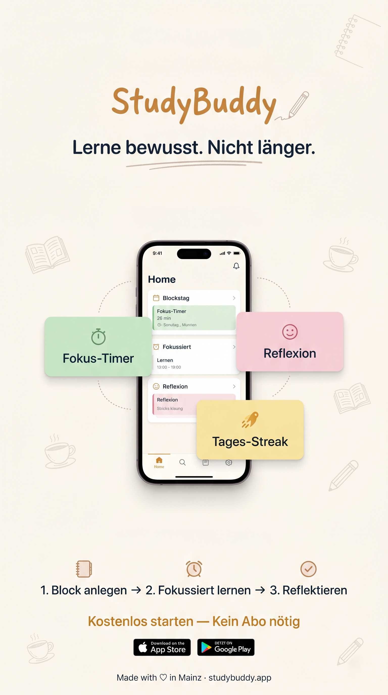

Challenge
Many students struggle with ineffective time management. They don't know how productive they actually were, get lost in endless sessions without breaks, and rarely reflect on what worked. Existing tools like calendar apps or timers are too generic and lack any connection to the actual study experience.
Solution
StudyBuddy lets students plan their time in structured study blocks, work with a focused timer, and briefly reflect after each session. The app feels like a diary entry — light, personal and motivating. The entire core flow takes under 15 seconds to start.
Primary User
"I study for hours but at the end I don't know if I actually got anything done. I need structure — but please, without the stress."
Problem & Research
Desk research across Forest, Pomodoro Timer, StudySmarter, and Notion. Key insight: most tools focus on timer OR planning — none combine both with reflection. Persona "Lena" developed from findings.
10hStructure & Flow
Defined 3 core features: block creation, focus timer, and reflection. Designed a 6-screen user flow — from opening the app to session reflection — achievable in under 15 seconds. Low-fidelity pencil wireframes.
15hVisual Design & Prototype
Style tile built around a "diary entry" concept — warm pastels (green, pink, yellow) on cream. Deliberate dark mode for the timer screen as a psychological focus signal. Hi-fi mockups and clickable Figma prototype.
20hDocumentation & Reflection
Documented all design decisions and rationale. Key learning: the hardest challenge was removing features, not adding them. Each extra screen is a potential drop-off point.
5hKey Features
- Study block creation — subject, duration, type (read / practice / summarize)
- Minimal dark focus timer — one tap to end, swipe to pause
- Post-session reflection — mood emoji, optional short note
- Daily streak counter with visual progress feedback
- Full core flow in under 15 seconds from app open
Tools & Skills
- Figma — Wireframes, Hi-Fi Mockups, Prototype
- UX Research — Desk Research, Persona, Key Findings
- UX Flows — State Diagram, 6-screen core flow
- Visual Design — Style Tile, Dark/Light contrast system
- CPUX Methodology — Certified UX Designer course